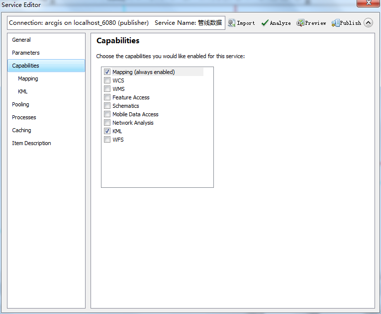

ArcGIS地图发布与数据切片
下面介绍如何发布ArcGIS Server服务并对其进行切片
地图发布
在发布服务之前首先要对地图服务按照标准进行数据整备，当一个MXD文档中的地图数据整备完毕之后就可以将，MXD文档发布为ArcGIS地图服务了。步骤如下：
1、首先点击 文件（File） (Share As) 服务Service 进入发布对话框
图6.1
2、这里有三个选项
1）发布服务，如果是第一次发布就选择这个。2）发布为服务定义文件。3）覆盖一个已经存在的服务，如果是要覆盖原来的服务重新发布则选择这个。根据您的需要进行选择。
图6.2
3、这个面板上面的参数是选择服务器连接，这里就是要准备连接要发布的服务器。如果下拉菜单里没有选项，
那么点击右边的加号按钮。进行添加如图。之后选择连接以及服务名称进行下一步。
图6.3
图6.4
图6.5
4、选择文件存放位置，如图所示。每个服务都可以放到一个文件夹下分类，如果没有文件夹可以重新创建一个。
图6.6
5、进入服务编辑面板，首先点击上面的
工具进行检查。
图6.7
这个面板负责勾选服务具有的属性，例如地图属性(Mapping)、WCS服务、WMS服务、Feature
Access服务（需要与数据库连接）等。根据需要进行选择。

图6.8
6、进行瓦片规格设置，如图所示为缓存设置面板，用于切片服务的设置。根据图片上的提升，首先选择使用瓦片。之后在切片方案里面
选择我们已经准备好的切片方案加载
。之后根据数据需要在进行级别的选择。
图6.9
7、在信息描述面板里面添加描述
8、点击
发布
服务切片
以上的步骤已经将一个服务发布到了ArcGIS
Server中，之后如果您刚才设置了瓦片切片，现在就需要切片。步骤如下：
1、打开ArcCatelog，寻找自己的刚才发布的服务。右键—>管理缓存进入管理切片对话框。

图7.1
2、如图所示为开始进行缓存的对话框。首先选择
切片方式包括RECREATE_ALL_TILES（重新切片）、RECREATE_EMPTY_TILES（将空瓦片切片）、DELETE_TILES(删除瓦片)。三种根据需要进行选择。
3、之后确认其他参数无误，点击OK开始切片。右键点击
可以查看缓存情况
。

图7.2